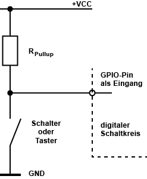
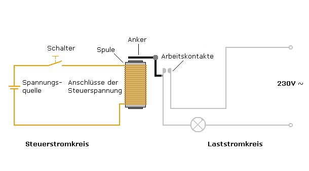
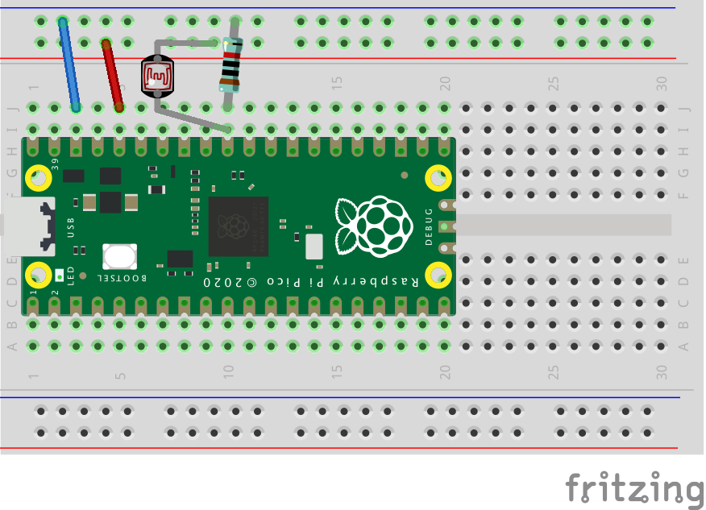

2.1 Messkette
EVA-Prinzip

- Gebäudeautomation wird durch eine Steuerungseinheit überwacht und gesteuert
- Hierzu werden Eingangs-Signale gemessen und Ausgangssignale erzeugt
- In der Steuerungseinheit werden Funktionen implementiert, die die Messsignale in Ausgangssignale umwandeln
- Steuerungseinheiten sind heute meist frei programmierbar (z.B. Speicherprogrammierbare Steuerung) oder wurden für bestimmte Funktionen vorprogrammiert (z.B. Mikrocontroller in LED-Vorschaltgeräten)
Digitale Eingänge
- Digitale Eingänge können nur zwei Zustände annehmen (0:
Falseoder 1:True) - Die Zustände werden durch Spannungen repräsentiert
- i.d.R. gibt es Spannungsbereiche, die als
0oder1interpretiert werden
✍️ Aufgabe 2_1_1: Raspberry Pi Pico als Mikrocontroller
- Beim Raspberry Pi Pico handelt es sich um einen Mikrocontroller, der mittels Python programmiert werden kann
- Im folgenden wird folgende Hardware benötigt:
- Raspberry Pi Pico
- Breadboard
- Taster
- Widerstand ca. \(470 \Omega\) und \(10 \,k\Omega\) $ 470 \Omega$ und $10 \,k\Omega $
- Jumperkabel
- Ziel ist es, dass der Mikrocontroller den Taster ausliest und den Zustand auf der Konsole ausgibt
CircuitPython installieren
- Halte den
BOOTSELTaster auf dem Pico gedrückt und verbinde diesen über USB mit dem Rechner - Passende Firmware UF2-File herunterladen und in den als USB-Laufwerk erkannten Pico kopieren
- Pico sollte jetzt neue Starten und die Firmware installieren
- Nach dem erneuten Verbinden sollten nun einige Programme im Pico liegen

Programmieren des Pico mittels CircuitPython
- Öffenen Sie im Chrome Browser die Seite des Online Editors
- Verbinden Sie Sich mittels USB
- Wählen Sie die Schnittstelle
CircuitPython CDC Controlaus - Öffnen Sie das Verzeichnis (USB-Laufwerk)
CIRCUITPYund wählen SieUSE / - Öffnen Sie die Datei
code.pyund fügen Sie den folgenden Inhalt ein - Öffnen Sie die Serielle Schnittstellen, um die Ausgabe zu sehen
Serial, übertragen Sie den Code und starten Sie den Pico neuSave + Run
Hauptprogramm code.py
- Dieses Programm wird automatisch ausgeführt und ist der Einsteigspunkt für alle Programme (vgl.
MAINbei TwinCat) - Passen Sie das Hauptprogramm so an, dass die LED länger hell als dunkel ist
- Passen Sie die Ausgabe an indem Sie
"Sleep!"ersetzen# Externe Bibliotheken laden import time # Bibliothek Zeit-Funktionen import digitalio# Bibliothek zur Steuerung von GPIOs import board # Bibliothek welches die Adressen der Pins kennt: z.B. board.LED # Ein- und Ausgänge definieren led = digitalio.DigitalInOut(board.LED) # Die Variable LED wird mit dem GPIO der LED auf dem Board verbunden led.direction = digitalio.Direction.OUTPUT # Legt Richtung des PIN fest -> Output # Endlosschleife while True: led.value = True time.sleep(0.5) led.value = False time.sleep(0.5) print("Sleep!")
Pin-Übersicht

- VCC Voltage Common Connector: Spannungs- Versorgung \(5\) oder \(3.3 \,\text{V}\)
- Alles unter \(0,8\,\text{V}\) ist low
- alles über \(1,3\,\text{V}\) ist high
- Ground: \(0 \,\text{V}\)
- Einige GPIOs können als Busleitungen genutzt werden: UART, SPI, I2C
https://www.elektronik-kompendium.de/sites/raspberry-pi/2002191.htm
Breadboards
 - Steckplatine für Systemtest und Prototyping
- vier Reihen für Spannungsversorgung
- weitere Raster sind längs verbunden
- Steckplatine für Systemtest und Prototyping
- vier Reihen für Spannungsversorgung
- weitere Raster sind längs verbunden
https://www.elektronik-kompendium.de/sites/praxis/bauteil_steckbrett.htm
General Purpose Input/Output
- GPIO arbeiten von \(2...16 \,\text{mA}\)
- GPIOs können binär gelesen und geschaltet werden
✍️ Aufgabe 2_1_1: Anschluss eines Tasters an einen Raspberry Pi Pico
- Schließen Sie den Taster wie folgt an 
- \(R_{pullup} = 10 \,\text{k}\Omega\)
- Verbinden Sie den Taster mit dem 3.3V Pin und dem GPIO 0
- Fügen Sie die folgenden Code- Teile an den richtigen Stellen ein und starten Sie das Programm
import time
import board
import digitalio
button_pin = board.GP0 # Replace with the GPIO pin connected to your button
button = digitalio.DigitalInOut(button_pin)
button.direction = digitalio.Direction.INPUT
button.pull = digitalio.Pull.UP # Use pull-up resistor; change if using pull-down
while True:
if not button.value: # Button is pressed (LOW)
print("Button Pressed!")
else:
print("Button Released!")
time.sleep(0.1) # Add a small delay to debounce the button
GPIO-Eingang mit Taster/Schalter und Pullup-Widerstand
- Unbeschaltet oszillieren die GPIOs häufig unsauber zwischen den Zuständen
- Grundzustand des Eingangs bei offenem Schalter:
high - Durch schließen:
low - \(4{,}7~k\Omega\) als Standardwert
- (RaspBerry Pis haben eingebaute Widerstände, die aktiviert werden können)
https://www.elektronik-kompendium.de/sites/raspberry-pi/2110081.htm, https://www.elektronik-kompendium.de/sites/raspberry-pi/2006051.htm
GPIO-Eingang mit Taster/Schalter und Pulldown-Widerstand

- Grundzustand des Eingangs:
low - Durch schließen:
high - der Regel \(10~k\Omega\)
Zusammenfassung Schalter und Taster
- In der Praxis tendiert man dazu, GPIO-Eingänge mit einem Pullup-Widerstand mit +VCC zu verbinden und gegen Ground (GND) zu schalten
- Erfordert Negation in der Software
- Werte von \(10\) bis \(100~k\Omega\)
- GPIO-Eingang mit Taster/Schalter und Querwiderstand
- Mehr zu Pull-Up vs Pull-Down
Digitale Ausgänge
- Ausgänge können mit einer Spannung beschaltet werden
- Bei einem Raspberry Pi Pico sind die Ausgänge auf \(3.3 \,\text{V}\) begrenzt
- Die Ausgänge können bis zu \(16 \,\text{mA}\) liefern
✍️ Aufgabe 2_1_3: Anschluss einer LED an einen Raspberry Pi Pico
- Nun wollen wir eine LED anschließen in der Folge über den Taster schalten
- Sie LED soll nach einem Druck auf den Taster für \(1\,\text{s}\) leuchten
- passen Sie den Code entsprechend an und nutzen Sie dazu die folgenden Code-Teile
import time
import board
import digitalio
led_pin = board.GP1 # Replace with the GPIO pin connected to your LED
led = digitalio.DigitalInOut(led_pin)
led.direction = digitalio.Direction.OUTPUT
while True:
led.value = not led.value # Toggle the LED state
time.sleep(0.2) # Add a small delay for debouncing
time.sleep(0.1)
https://www.elektronik-kompendium.de/sites/raspberry-pi/2612031.htm
Leuchtdioden

- Langes Bein: Anode
https://nawi-werft.de/bausteine/led-ansteuern/
Ausgang verschalten
- links: LED an Masse
- GPIO auf high > LED an
- rechts: LED an VCC
- GPIO auf low > LED an


https://www.elektronik-kompendium.de/sites/raspberry-pi/2102181.htm
Ausgang verschalten
- Wählen Sie einen geeigneten GPIO
- Schließen Sie die LED in Reihe an den GPIO und einen Widerstand an und verbinden Sie die andere Seite des Widerstands mit Ground (\(0V\))
Relais und Schütze
- Für viele Anwendungen ist die Leistung der GPIOs nicht ausreichend (\(P=UI=3.3V \cdot 4mA = 13.2 mW\))
- Eine höhere Spannung an den Ausgängen ist nicht möglich (Sicherheit, Energieeffizienz, Bauform)
- Relais sind elektromagnetische Schalter, die eine hohe Leistung schalten können indem sie einen Schaltkontakt öffnen oder schließen
- heute meist nicht mehr mechanisch sondern elektronisch realisiert

Pulsweitenmodulation
- Digitale Ausgänge können nur zwei Zustände annehmen (0 /
Falseoder 1 :True) - Einige Verbraucher (z.B. Motoren, LEDs) kann man über PWM quasi-analog steuern
- Hierzu muss man Periodendauer \(T\) und Duty Cycle \(t\) geeignet setzen

https://www.elektronik-kompendium.de/sites/kom/0401111.htm
🤓 ✍️ Aufgabe 2_1_4: Anschluss einer LED mit PWM an einen Raspberry Pi Pico
- Sorgen Sie nun dafür, dass die LED mit PWM angesteuert wird, so dass diese nach Betätigung des Tasters für \(1\,\text{s}\) leuchtet und dann langsam über \(5\,\text{s}\) ausgeht
import pwmio
import board
pwm = pwmio.PWMOut(board.GP1) # output on LED pin with default of 500Hz
while True:
for cycle in range(0, 65535): # Cycles through the full PWM range from 0 to 65535
pwm.duty_cycle = cycle # Cycles the LED pin duty cycle through the range of values
for cycle in range(65534, 0, -1): # Cycles through the PWM range backwards from 65534 to 0
pwm.duty_cycle = cycle # Cycles the LED pin duty cycle through the range of values
Analoge Eingänge
- Sensoren liefern meist analoge Signale (z.B. Spannung, Strom, Widerstand)
- z.B. basieren viele Temperatur-Sensoren auf dem Widerstand von Metallen
- Damit änder sich bei gleichbleibender Spannung der Strom, welcher am Eingang gemessen werden kann
Analog-Digital-Wandler
- Der Analog-Digital-Wandler (ADC) wandelt ein analoges Signal in eine digitale Zahl um
- Dabei gibt es zwei relevante Parameter
- Auflösung: Anzahl der möglichen Werte
- Referenzspannung: Spannungsbereich, der in die Auflösung abgebildet wird
- z.B. 16 Bit Auflösung und \(3.3 \,\text{V}\) Referenzspannung \(\Rightarrow\) \(2^{16} = 65536\) Werte zwischen \(0\) und \(3.3 \,\text{V}\)
- Zudem können sich Systeme in ihrer Abtastrate unterscheiden, d.h. wie oft Werte gelesen werden können
✍️ Aufgabe 2_1_4: Anschluss eines Analogen Helligkeitssensors
- Schließen Sie einen analogen Helligkeitssensor an den Raspberry Pi Pico an
- Links (-): GND / Masse / 0 Volt
- Mitte: +VCC z.B. 3,3 oder 5 Volt
- Rechts (S): Verbindungspunkt des Spannungsteilers
- Fixwiderstand \(10 \,\text{k}\Omega\) zwischen +VCC und S
- Verdunkeln Sie und beleuchten Sie den Sensor und beobachten Sie die Änderung des Eingangswertes
- Zum Testen können Sie den Analog-Eingang mit \(3.3 \text{ Volt}\) und \(0 \text{ Volt}\) verbinden
- Lesen Sie den Wert des Sensors aus und geben Sie diesen auf der Konsole aus
import board
import analogio
import time
# Initialisierung des ADC (Analog-Digital Converter)
ldr = analogio.AnalogIn(board.A2)
# Wiederholung
while True:
# ADC als Dezimalzahl lesen
read = ldr.value
# Ausgabe in der Kommandozeile/Shell
print("ADC:", read)
# Warten
time.sleep(1)
https://www.elektronik-kompendium.de/sites/raspberry-pi/2612221.htm

Mapping von Eingangswert zu physikalischer Größe
- Um sinnvoller mit den Werten arbeiten zu können, ist es sinnvoller die gelesen Werte
readin eine Variable mit einer sinnvollen physikalischen Einheit zu überführen - Im Fall dieses Sensors und Aufbaus lassen sich die Werte gut mit einer Parabel anpassen
- \(E= f(x) = (a(x-s))^2\)
- $a =0.0015 $ ist die Steigung der Parabel
- \(s = 44000\) ist der Verschiebung der Parabel auf der x-Achse
- \(x\) ist der Eingangswert

Übliche Beleuchtungsstärken \(E\)
| Umfeld | \(E \text{ in lux}\) |
|---|---|
| Mondlose, klare Nacht | 0,0003 |
| Nachts bei Vollmond | 0,2 |
| Beleuchtete Strassen, Plätze | 10..20 |
| Abstellräume, Lagerräume | 50 |
| Lagerräume, Toiletten, Treppen | 100 |
| Speiseräume, Werkhallen, | 200 |
| Läden, Sitzungszimmer | 300 |
| Arbeitsplätze, Schulzimmer | 500 |
| erhöhte Ansprüche | 750 |
| Elektronikmontage, Uhrenmacher | 1.000 |
| Bedeckter Himmel im Winter | 1.000.. 2.000 |
| Bedeckter Himmel im Sommer | 5.000..20.000 |
| Sonnenlicht im Winter | 10.000 |
| Sonnenlicht im Sommer | 100.000 |
Nachverarbeitung nach ADC
- Viele (teurere) Peripherie-Geräte kommen als Transmitter (Kombination aus dem Sensor selbst und einem Messumformer)
- Diese linearisieren sie spannungs-(oder Strom) Ausgabe
- Eine Umrechnung der Spannungswerte an Eingang in die Physikalische Größen muss jedoch weiterhin stattfinden
- Informationen hierzu finden sich meinst im Datenblatt

https://shop.bb-sensors.com/Messtechnik-je-Branche/Gebaeudetechnik/Helligkeitssensor-mit-Messumformer-0-10-V.html
✍️ Aufgabe 2_1_5: Mapping eines Analogen Helligkeitssensors
- Oben ist die quadratische Funktion gegeben, die die gemessenen Werte in Beleuchtungsstärke in Lux umrechnet
- Implementieren Sie diese Funktion in Python und geben Sie dann eine Nachricht mit der Beleuchtungsstärke in Lux aus
- Orientieren Sie sich dabei an folgendem Code, der ein Beispiel für ein lineares Mapping zeigt
| Symbol | Description |
|---|---|
| \(E_{max}\) | maximale Beleuchtungsstärke |
| \(E_{min}\) | minimale Beleuchtungsstärke |
| \(z_{max}\) | maximaler Messwert des ADC |
| \(z_{min}\) | minimaler Messwert des ADC |
- Annahme: Linearer Zusammenhang \(E = f(z) = \beta_0 + \beta_1 z\)
- 1: Wie groß ist der Y-Achsenabschnitt \(\beta_0\)?
- Bei welchen Wert hat \(E\), wenn \(z=0\)?
- 2: Wie groß ist die Steigung \(\beta_1\)?
- Wie groß ist die Änderung von \(E\) pro Änderung von \(z\)?
- \(\beta_1 = \frac{E_{max} - E_{min}}{z_{max} - z_{min}}\)
- Der folgende Code übernimmt dein Eingangswert und gibt einen normalisierten Wert zwischen 1 und 0 zurück
- Erstellen Sie in einer Datei
mappings.py(im gleichen Ordner, wie diecode.py) eine Funktionmap_quat(), die stattdessen die oben angegeben Formel implementiert
def map_lin(z):
E_max = 1
E_min = 0
z_max = 65535
z_min = 0
beta_0 = E_min
beta_1 = (E_max - E_min) / (z_max - z_min)
return beta_0 + beta_1 * z
- 🤓 Im besten Fall wird
map_lnin einer eigenen Dateimappings.pygespeichert und kann dann mittelsimport mappingsin anderen Programmen genutzt werden
import board
import analogio
import time
from mappings import map_lin
# Initialisierung des ADC (Analog-Digital Converter)
ldr = analogio.AnalogIn(board.A2)
# Wiederholung
while True:
# ADC als Dezimalzahl lesen
read = ldr.value
# Ausgabe in der Kommandozeile/Shell
print("ADC:", read)
print("E in Lux", map_lin(read))
# Warten
time.sleep(1)
🤓 Verwendung von Globalen Variablen
- einige Variablen sind so grundlegend, dass wir Sie nicht im Code sondern zentral verändern wollen
- Hierzu können wird Umgebungsvariablen in der
settings.tomlverändern im VerzeichnisCIRCUITPYändern
MY_NAME = "Julian"
os aufgerufen werden
# connect to your SSID
import os
print(os.getenv('MY_NAME'))
- Passen Sie den Code so an, dass die zur Umwandlung benötigten Werte als Umgebungsvariablen gesetzt werden können
🤓 ✍️ Aufgabe 2_1_6:
- Nicht bei jedem Sensor wird die gefittete Kurve perfekt passen
- passen Sie den Code so an, dass die Parameter der Kurve in der
settings.tomlhinterlegt werden können, um diese möglichst einfach anzupassen
Analoge Ausgänge
- Entsprechend gibt es auch analoge Ausgänge
- Diese können z.B. zur Ansteuerung von Motoren genutzt werden
- Dabei wird einer meist der Wert einer Integer-Variable im Speicher in einen Spannungswert umgewandelt